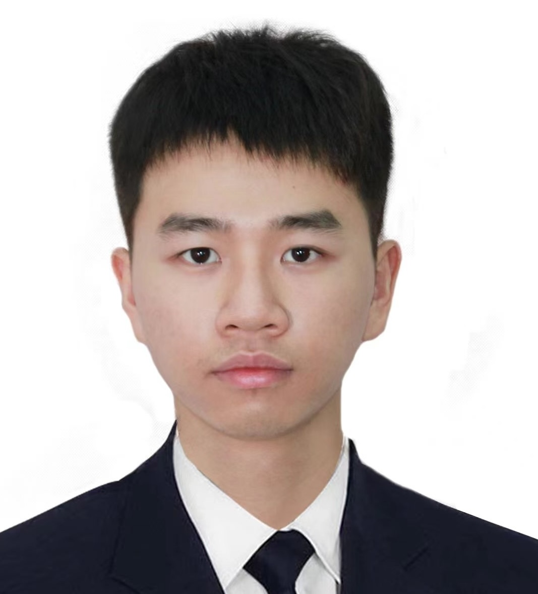

Current Group Members
Haihui Gao
PhD student (M.Sc. UPenn.)
Input-output data-driven control (co-supervised with Prof. David Saussie)

Jérémy Meyer
Thesis-based Master (B.Eng. Centrale Nante)
Multi-robotic localization (co-supervised with Prof. Jerome Le Ny)
Joel Aurelien Kamwa
Maîtrise professionnelle
Major in Automation and Systems
Nour Karoui
Stage en laboratoire (Polytechnique)
Modeling for multi-robotic localization (co-supervisor: Jerome Le Ny)
Visiting Faculty
Jongwon Choi
Assistant Professor, Hannam University (South Korea)
Visiting Polytechnique Montréal for one year (2025-2026).
Research focus on power electronics and related control systems.
Former Group Members